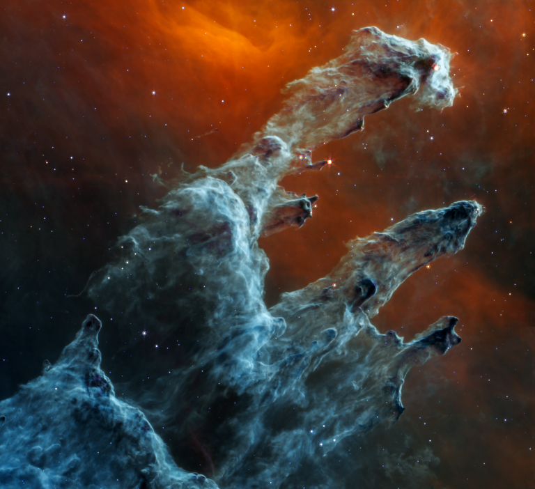
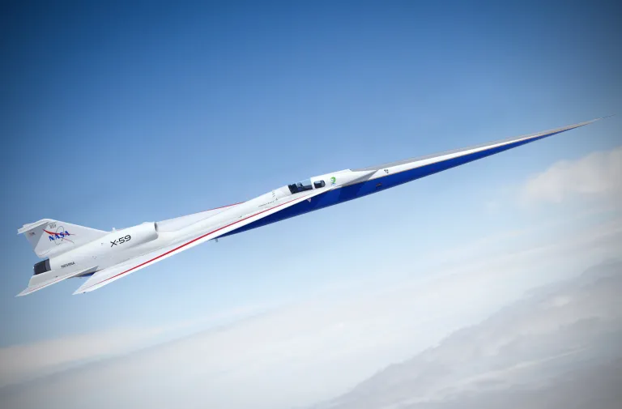
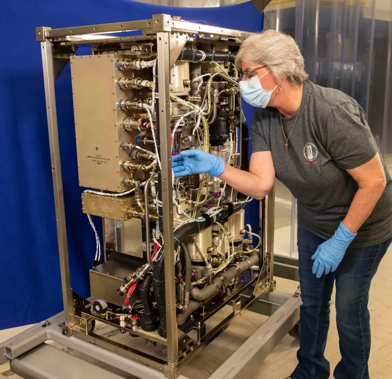

 science missions Peering into the creation of the universe and traversing Mars The James Webb Space Telescope is an orbiting infrared observatory that will look to the beginning of time and to hunt for the unobserved formation of the first galaxies, as well as to look inside dust clouds where stars and planetary systems are forming today.
human missions From low Earth orbit to the Moon and Mars Rotational crews have been living in low Earth orbit continuously aboard the International Space Station since 2000. Located about 250 miles above Earth, the space station is a full-time microgravity laboratory. On behalf of researchers worldwide, station crews conduct experiments only possible in the unique conditions of space, observe Earth as a system, and test new technologies that ultimately will help send humans far beyond Earth.
 Aeronautics missions Lowering the Sonic Boom NASA’s aeronautical innovators are leading a government-industry team to collect data that could make supersonic flight over land possible, dramatically reducing travel time in the United States or anywhere in the world.
 Technology missions Demonstrating the innovations that help us go, land, live, and explore in space Technology drives exploration and the space economy. Technology demonstrations enable NASA to mature the cutting-edge, laboratory-proven technologies and new capabilities that will transform future science and space exploration goals. Through these missions, we conduct ground-based or in-space testing to determine the feasibility of technologies and systems for use in NASA missions, for other government agencies, and with the commercial space industry